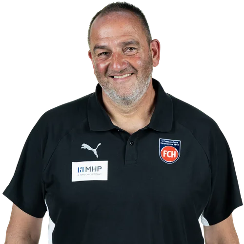
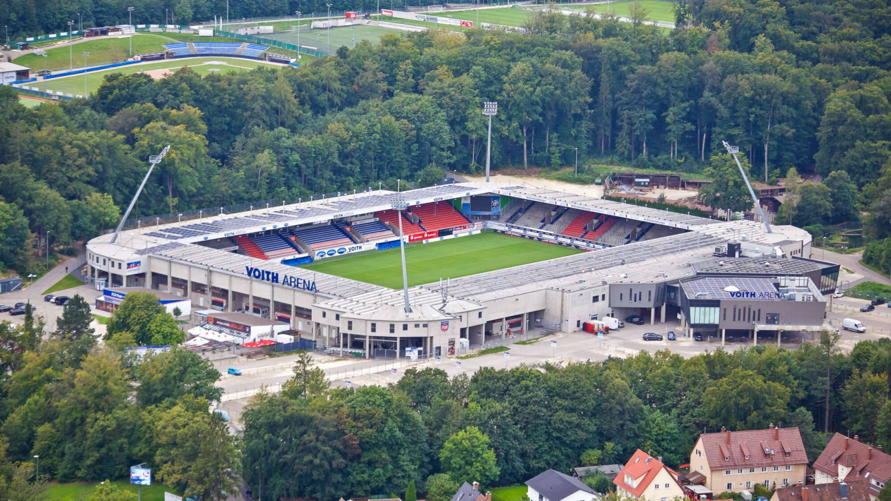

Treinador: Frank Schmidt
Frank Schmidt é uma das figuras mais lendárias e respeitadas da história do futebol mundial. Atual treinador do Heidenheim, detém o recorde absoluto de treinador há mais tempo em funções no futebol profissional europeu, sendo o símbolo máximo de lealdade e estabilidade no desporto moderno.

Estádio: Voith-Arena
O Voith-Arena é o acolhedor e peculiar estádio do 1. FC Heidenheim, destacando-se como o recinto situado à maior altitude de todo o futebol profissional alemão, a cerca de 555 metros acima do nível do mar.

Estilo de Jogo:
O estilo de jogo que Frank Schmidt utiliza no Heidenheim é pautado por um futebol de "operário", caracterizado por uma intensidade física extrema, transições ultra-rápidas e uma agressividade implacável sem bola.
"Nur der FCH!"